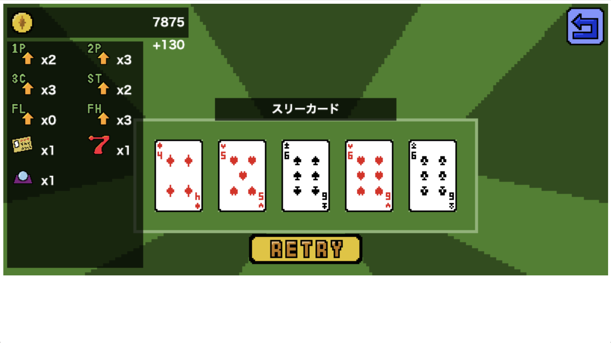
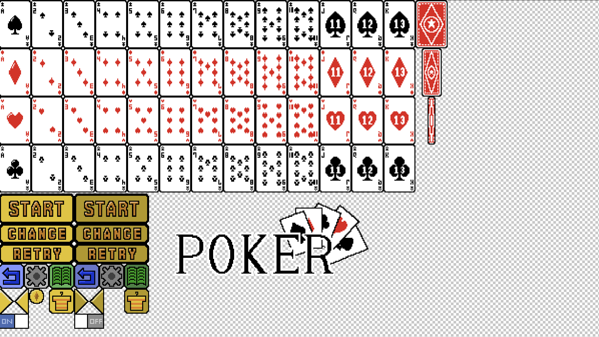
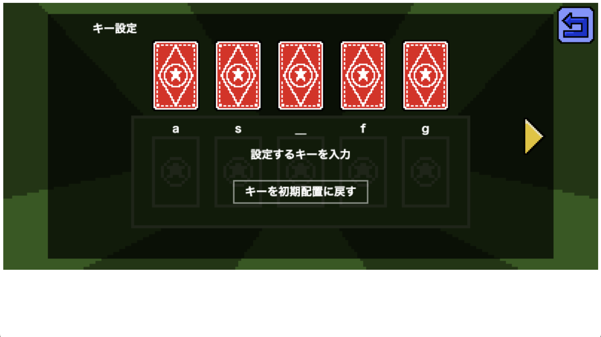

POKER
使用した言語・ツール
JavaScript
HTML
GitHub Pages（公開用）
「POKER」プレイ用リンク
https://lota-136.github.io/PokerGame/
ソースコード
https://github.com/Lota-136/PokerGame/

ブラウザで動くシンプルな一人用ポーカーゲームです。役を強化してコインを増やすインクリメンタルゲームのような要素を含んでいます。

使用したドット絵は、既存イラストを使わずオリジナルの素材を使用しています。

ストレスのない快適な操作にこだわり、クリックとキーボードの両方で操作する、設定でキーコンフィグを変えることなどができます。
リストに戻る